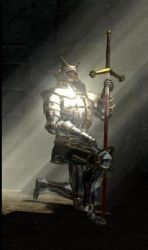

Les Terres de Kirin Tor
Frederik
Points : 0

Joué par :
[ Information masquée ]
Age : 37
Lieu de naisance : inconnu
Signe de naissance : panda
Sexe : Homme
Race : Humain
Faction : Alliance
Formation : Paladin
Niveau : 9
Guilde :
Artisanat 1 : Forgeron
Artisanat 2 : Mineur
Envoyer un MP
Description : Mes souvenirs ne commencent pas au jour de ma naissance mais à stormwind, je me revoie encore à l'orphelinat jouant avec mon ami Grish quelque part dans les rues sombre de stormwind, voila ou tout commença:
Je jouai à cache-cache avec grish quand soudain je bouscula un prêtre nommé arthus.
-Hola mon garçon!!!Que fais tu donc?Ce n'est pas un endroit pour les enfant ici.
-Pardon mon père mais je ne vous ai pas vue.
-Ou habite tu mon garçon?
-A l'orphelinat mon père.
Grish me rejoignit au même moment.
-Bonjour mon petit
-bonjour mon père
-Avez vous faim?
-Ho oui mon père!
Grish et moi étions affamés car l'orphelinat ne recevait pas assez d'argent pour que les enfants mangent à leurs faims.
-Voulez vous que je vous emmenes manger à la cathédrale?
nous suivîmes le prétre jusqu'a l'intérieur de la cathedrale, se massif édifice nous remplis d'admiration.
Sous les arches, des paladins récitaient des piéres et lustraient leurs armures pour se préparer a une bataille imminente. Nous tombèrent bouche-bé devant ces grands guerriers avec leurs armures brillantes et leurs épées tranchantes comme des rasoirs
-Ils vous fascinent n'est-ce pas? demanda le prétre
-Plus que tout au monde !
-Bien..... vous m'avez l'air d'étre deux coeurs pur et innocent... je vais parler à mon superieur ainsi qu'a l'orphelinat....
En attendant, mangé a votre faim, mes enfants !
Une table couverte de victuaille se dressait devant nous, et se jour, nous dégustîmes l'un des meilleurs repas de notre vie...
Quelques jours plus tard, le prétre vint a l'orphelinat, parla longement avec la directrice, et vint nous voir
-Je me suis accordé avec votre directrice, et nous sommes d'accord pour que je vous enseigne la voie de la lumiére... si vous faites serment de toujours servir le juste et de combattre le mal ainsi que d'aider les faibles et les démunis.
-Oui, Nous le souhaitons ! Répondirent en coeur Grish et moi
Quelques années plus tard, nous voila de fiére paladin, en train de parfaire notre maitrise des armes ainsi que notre foi.
C'est la que tout commence réellement... et le futur, c'est le destin qui nous le dira.